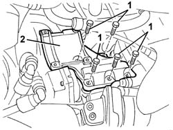

5040A26 compressor mount - r r
- Path
- Procedures > 50 AUXILIARY UNITS > 5040 AIR CONDITIONING CASING AND COMPONENTS > 5040A air conditioner coolant circuit > 5040A26 compressor mount - r r
- Kind
- repair procedure (removal / refitting; the operation number is the code)
- Applies to
- engines: 2.0 TS; all production periods
- Interactive page
- https://sloeber94.github.io/elrnDB-a147/en/#/3025414
Applies to: engines: 2.0 TS; all production periods
 Removing
Removing
 Refitting
Refitting7055B54 under-engine guard - r r
7055B64 Engine compartment DUST shield in front wheel arch (one), left or right - R.R. (right side).
5040A20 air conditioner compressor - r+r - includes fluid level check and top up if necessary
1. Undo the bolts fixing the compressor support.
2. Remove the compressor support.

Applies to: engines: 2.0 TS; all production periods
Refitting
RemovingCheck that the compressor support is not damaged.
Fit the mounting and tighten the bolts.
5040A20 air conditioner compressor - r+r - includes fluid level check and top up if necessary
7055B64 Engine compartment DUST shield in front wheel arch (one), left or right - R.R. (right side).
Topics linked from this page (3)
- 5040A20 air conditioner compressor - r+r - includes fluid level check and top up if necessary
- 7055B54 under-engine guard - r r
- 7055B64 Engine compartment DUST shield in front wheel arch (one), left or right - R.R.